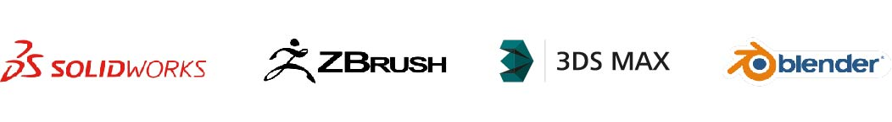
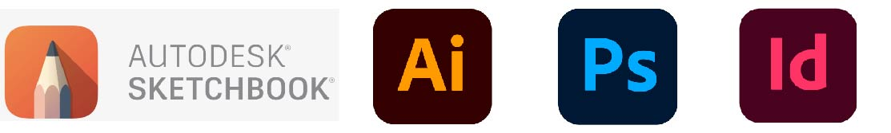
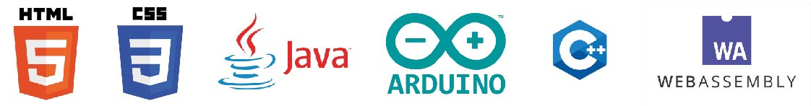

Mis habilidades
Como Diseñador Industrial me especializo en la generación y desarrollo de productos y conceptos tridimensionales, los programas que mas utilizo son aquellos para generación de conceptos 3D como Solidworks, Zbrush, 3Ds Max y Blender
Existen diversas opciones para la presentación de un archivo tridimensional, para generar materiales 3D, renders y entornos virtuales he utilizado programas como Keyshot, Vray, Substance Designer y Unreal Engine
Me apasiona el bocetaje, dentro del software para generación de conceptos gráficos domino el uso de Sketchbook, Illustrator, Photoshop e Indesign
Gracias al apoyo de mi familia he podido estudiar algunos cursos y junto a mi bachillerato en programación conozco el uso básico de algunos lenguajes y plataformas de desarrollo, no a nivel profesional pero si de manera general puedo usar HTML, CSS, Java, Arduino y un poco de C++
